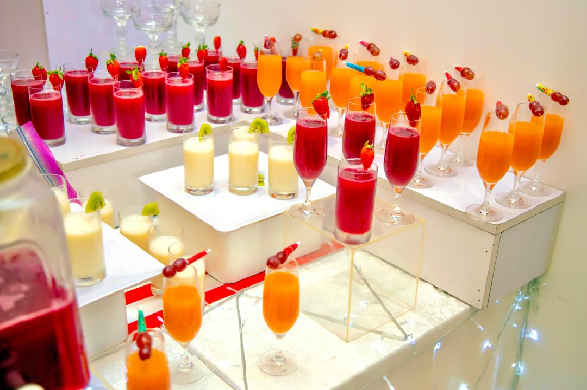
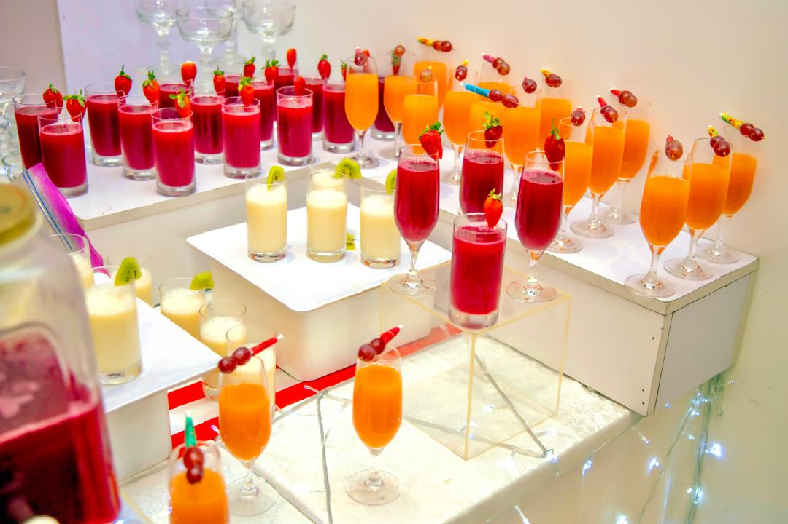

MasterCaterer was founded by a culinary enthusiast and Chef, Toyin Tunde-Oladipo. With a deep love for both Nigerian and international cuisines, She has built
MasterCaterer on the principles of quality, creativity, and customer satisfaction.
Having catered for a wide range of clients, from corporate events to school meal programs, Chef Toyin
brings years of experience and a commitment to excellence. Under her leadership, MasterCaterer has
become known for its flavorful dishes, beautifully presented meals, and a personalized approach to
catering.
With a strong background in the culinary arts and business management, Chef Toyin combines professional
expertise with a genuine passion for bringing people together through food. She believes that great food
has the power to create connections and spark conversations. This philosophy drives everything MasterCaterer does, ensuring that each event is tailored to meet the unique tastes and
preferences of every client.
At the heart of MasterCaterer is a commitment to using fresh, high-quality ingredients and a focus on
authentic flavors. Every dish is prepared with care to guarantee that only the best is served. Whether you're hosting a business luncheon, a school meal program, or a private
event, you can trust that MasterCaterer will provide an unforgettable dining experience.
 
